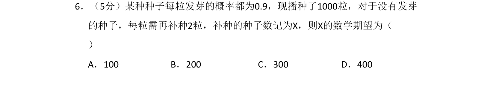
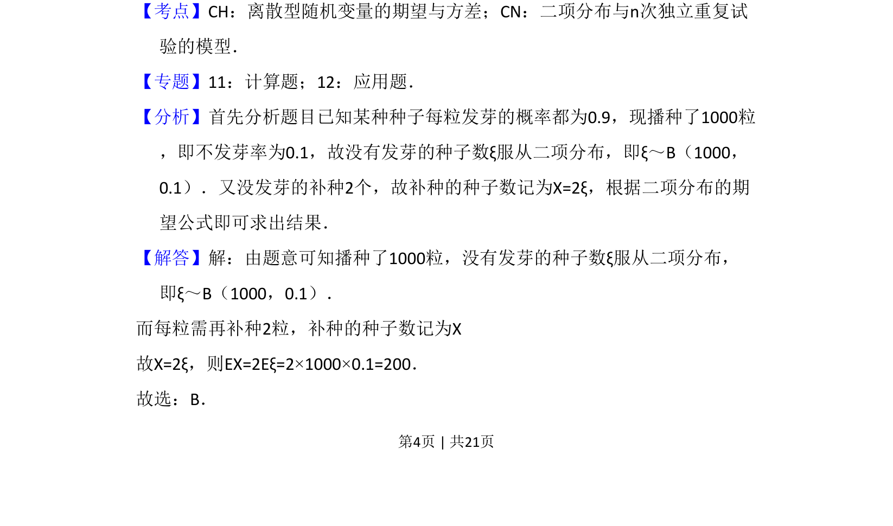

考点：二项分布 数学期望

该题考查二项分布期望的计算，通过补种数量与未发芽种子数的关系求期望。

📄 原 PDF 第 4 页：
素材/真题/吉林/2008-2024·（吉林）数学高考真题/2010年高考数学试卷（理）（新课标）（解析卷）.pdf
6．（5分）某种种子每粒发芽的概率都为0.9，现播种了1000粒，对于没有发芽 的种子，每粒需再补种2粒，补种的种子数记为X，则X的数学期望为（ ） A．100 B．200 C．300 D．400
【考点】CH：离散型随机变量的期望与方差；CN：二项分布与n次独立重复试 验的模型．菁优网版权所有 【专题】11：计算题；12：应用题． 【分析】首先分析题目已知某种种子每粒发芽的概率都为0.9，现播种了1000粒 ，即不发芽率为0.1，故没有发芽的种子数ξ服从二项分布，即ξ～B（1000， 0.1）．又没发芽的补种2个，故补种的种子数记为X=2ξ，根据二项分布的期 望公式即可求出结果． 【解答】解：由题意可知播种了1000粒，没有发芽的种子数ξ服从二项分布， 即ξ～B（1000，0.1）． 而每粒需再补种2粒，补种的种子数记为X 故X=2ξ，则EX=2Eξ=2×1000×0.1=200． 故选：B．